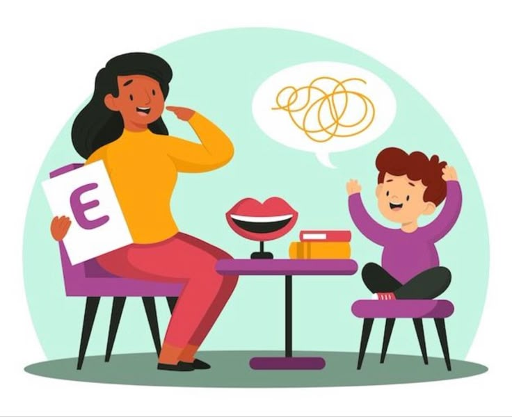

Psicología Clínica

Es una rama de la psicología que se dedica al estudio, diagnóstico y tratamiento de problemas emocionales, conductuales y psicológicos. Combina el rigor de la investigación científica con un enfoque humanista, ofreciendo apoyo personalizado a quienes enfrentan desafíos como la ansiedad, la depresión, los trastornos de la personalidad y más.
Psicología Infantil y Psicorrehabilitación
A través de la observación y el análisis, los psicólogos infantiles identifican dificultades como problemas de aprendizaje, trastornos de conducta y emociones, ayudando a los pequeños a superar obstáculos y desarrollar habilidades esenciales para su crecimiento. Trabajan de cerca con familias y educadores para crear entornos que fomenten el bienestar y el desarrollo saludable.
Terapia del Lenguaje
Los terapeutas trabajan con personas de todas las edades, ayudándoles a desarrollar habilidades esenciales para expresarse de manera efectiva. Desde niños con retrasos en el habla hasta adultos que han sufrido lesiones o condiciones médicas, la terapia del lenguaje es una herramienta fundamental para mejorar la calidad de vida y la interacción social.